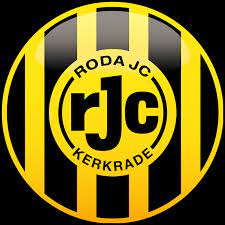

Hier hebben we het over de hobby's van Yasin.

Yasin heeft meerdere hobby's hier ga ik het hebben over een paar van hem.
Voetbal is een grote hobby van Yasin. hij heeft natuurlijk ook een favoriete club deze club heet Roda JC.
Yasin houd ook van kickboxen Dat heeft hij een poos gedaan bij een vereneging.
Hij vind het ook leuk om scooter te rijden dit doet hij op zijn Zip.
Yasin gaat wanneer hij tijd heeft natuurlijk ook stappen met zijn vrienden dit is iets wat hij maar altegraag doet.
Naast dit allemaal doe hij ook graag gamen met spellen zoals fifa, fortnite en gta v.
Dit waren de hobby's van Yasin.